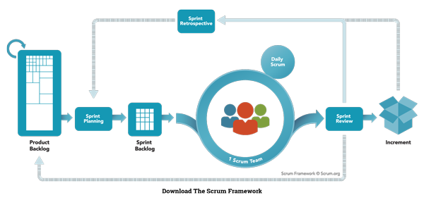
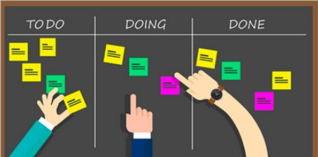
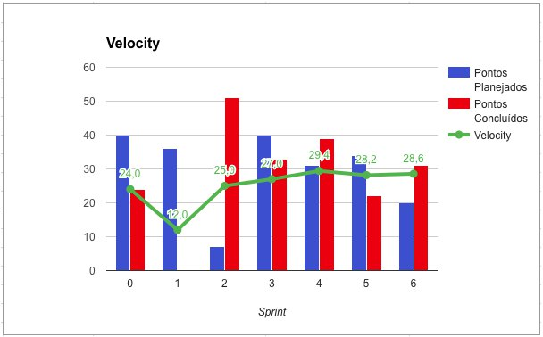

METODOLOGIA
Histórico de Revisão
| Data | Versão | Descrição | Autor(es) |
|---|---|---|---|
| 22/08/19 | 0.1 | Criação do documento, indicação de tópicos e referências | Lieverton Silva e Welison Regis |
| 22/08/19 | 0.2 | Adiciona scrum | Lieverton Silva e Welison Regis |
| 22/08/19 | 0.3 | Adiciona kanban | Lieverton Silva e Welison Regis |
| 22/08/19 | 0.4 | Adiciona burndown e velocity | Lieverton Silva e Welison Regis |
| 22/08/19 | 0.5 | Adiciona qudro de conhecimento e metodologia montada | Lieverton Silva e Welison Regis |
Introdução
O presente documento busca definir e formalizar as metodologias de trabalho a ser aplicadas no desenvolvimento do projeto. Nesse sentido, estabelece-se abaixo as metodologias pertinentes ao escopo de elaboração da aplicação, como pode-se citar o scrum, kanban, extreme programming e, também, as metodologias de gerência, como, por exemplo, reuniões, quadro de conhecimento e avaliações de desempenho com burndown, velocity.
Metodologias de desenvolvimento
Scrum
Scrum é uma metodologia ágil voltada para gestão e planejamento de projetos de software.
No Scrum, os projetos são dividos em ciclos (tipicamente mensais), conhecidos como sprints. O Sprint representa um espaço de tempo dentro do qual um conjunto de atividades devem ser executadas. Metodologias ágeis de desenvolvimento de software são iterativas, ou seja, o trabalho é dividido em iterações, que são chamadas de Sprints no caso do Scrum.1
A metodologia scrum define a utilização de um product backlog, o qual contém as funcionalidades a serem implementadas no projeto. No início de cada Sprint, faz-se um Sprint Planning Meeting, ou seja, uma reunião de planejamento na qual o Product Owner prioriza os itens do Product Backlog e a equipe seleciona as tarefas que ela será capaz de implementar durante o Sprint que se inicia. As tarefas alocadas em um Sprint são transferidas do Product Backlog para o Sprint Backlog.
Durante os dias de uma sprint, a equipe faz uma breve reunião (normalmente de manhã), chamada Daily Scrum. O objetivo é propagar o conhecimento sobre o que foi feito no dia anterior, identificar impedimentos e priorizar o trabalho do dia que se inicia.
Ao final de um Sprint, a equipe apresenta as funcionalidades implementadas em uma Sprint Review Meeting. Finalmente, faz-se uma Sprint Retrospective e a equipe parte para o planejamento do próximo Sprint. Assim reinicia-se o ciclo.

Kanban
Kanban é uma metodologia que se utiliza de cartões (post-it e outros) para indicar o andamento dos fluxos de produção.
Nesses cartões são colocadas indicações sobre uma determinada tarefa, por exemplo, “para executar”, “em andamento” ou “finalizado”.
A utilização de um sistema Kanban permite um controle detalhado de produção com informações sobre quando, quanto e o que produzir.

Extreme Programming (XP)
A Extreme Programming (XP) é uma Metodologia Ágil para equipes pequenas e médias que desenvolvem software baseado em requisitos vagos e que se modificam rapidamente. Entre as principais diferenças da XP em relação às Metodologias Clássicas estão o feedback constante, a abordagem incremental e o encorajamento da comunicação entre as pessoas.
Entre as principais práticas do XP, pode-se citar: planejamento, entregas frequentes, metáfora, projeto simples, testes, programação em pares, refatoração, propriedade coletiva, integração contínua, cliente presente e padronização do código.
As práticas são conduzidas respeitando alguns princípios: princípio da comunicação, princípio da simplicidade, princípio do feedback e o princípio da coragem.
Metodologias de gerência
Burndown
Um gráfico de burndown é uma representação gráfica do trabalho a ser feito versus tempo. O trabalho restante (ou backlog) é geralmente no eixo vertical, com o tempo no eixo horizontal. É útil para prever quando todo o trabalho será concluído, frequentemente usado em metodologias ágeis de desenvolvimento de software, como o Scrum.

Velocity
O velocity é uma medida que evidência a velocidade do time para um projeto Scrum. Esse número é calculado e atualizado após a entrega de cada sprint e baseia-se na média dos pontos entregues das sprints concluídas. O time usa essa informação para saber até quantos pontos de história eles conseguem produzir por sprint.

Quadro de Conhecimento
O quadro de conhecimento guarda informações referentes ao conhecimento técnico de cada membro em relação às tecnologias envolvidas no projeto. Este quadro permite acompanhar a evolução de cada membro nas respectivas tecnologias, assim como acompanhar a circulação do conhecimento ao longo das sprints.
Metologia Montada
Visando uma boa organização e um bom controle do processo de produção, a equipe decidiu montar uma metodologia híbrida baseada nas metodologias ágeis: Scrum, XP e Kanban.
A adaptação foi realizada para suprir as necessidades do projeto, que devido estar em contexto acadêmico, muitas práticas não se encaixão ou por outro lado, nas metodologias puristas, há a falta de algumas rotinas.
O grupo também decidiu utilizar o plug-in ZenHub. Essa ferramenta facilita a visualização do progresso das tarefas e é falcilmente integrada ao backlog por meio das issues criadas ao longo do projeto. Com ela também podemos gerar os gráficos Burndown e Velocity, para auxilar na tomada de decisão e análise de cada issue e projeto como um todo.
Também é utilizado o quadro de conhecimento para planejar a sprint e manter a equipe engajada.
Scrum no Projeto
Foram adotados os seguintes aspectos do scrum:
-
Sprints: foi definido a duração de duas semanas para cada ciclo, sendo este iniciado em uma segunda e finalizado em um domingo;
-
Product Backlog: é uma lista contendo todas as funcionalidades desejadas para um produto;
-
Sprint Backlog: é uma lista de tarefas que o que a equipe se compromete a fazer em uma Sprint;
-
Sprint Planning/Retrospective/Review: reunião no início de uma sprint com o objetivo de organizar o que será feito na sprint e analisar o que foi alcançado na sprint anterior.
Kanban no projeto
O grupo definiu o seguinte pipeline (colunas):
- News issues: corresponde ao backlog do produto;
- Backlog: contém as issues da sprint;
- In Progress: os membros responsáveis estão trabalhando no artefato;
- Review: o artefato está pronto, porém aguardando a aprovação da equipe;
- Done: o artefato foi revisado e aceito.
XP no projeto
As seguinte práticas do XP foram adotadas pela equipe:
-
Projeto simplificado: quanto mais simples for o projeto, mais rápido é seu desenvolvimento;
-
Programação em pares: o desenvolvimento é guiado pela programação em par, ou seja, todo o sistema é implementado por dois programadores em uma única máquina;
-
Refatoração: reestruturar o sistema, sem alterar o seu comportamento, removendo sempre que possível a duplicidade, melhorando e simplificando o que já existe e tornando-o mais flexível;
-
Propriedade coletiva: os códigos não têm um dono, qualque membro pode melhorar ou corrigir o código;
-
Integração contínua: integre e atualize as versões do sistema a cada vez que uma nova tarefa for concluída;
-
Padrões de codificação: os programadores devem escrever seus códigos respeitando o padrão.
Comunicação da Equipe
São utilizadas as seguintes ferramentas para comunicação:
- Telegram: para realizar contato rápido;
- Discord: para pareamentos ou reuniões com aúdio, texto, vídeo e transmissões de telas;
- Visual Studio Live Share: para facilitar o pareamento, permitindo que o par possa trabalhar sob um mesmo ambiente (o que auxilia muito em escrever textos em markdown);
- Google Drive: para rastrear e guardar artefatos;
- Issues no github: como forma de organização;
- bot no discord: para informar o andamento das issues do repositório.